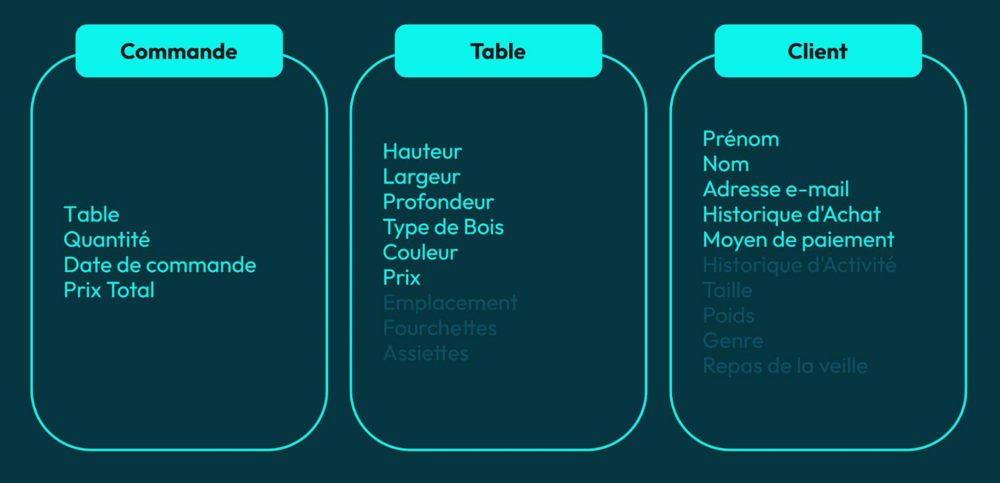

Domain-Driven Design
Problème 1
La complexité évolue avec le temps
Question
Comment maintenir le contrôle sur la complexité du logicielle ?

“Les d√©veloppeurs impl√©mentent ce qu‚Äôils comprennent de la sp√©cification, pas ce qui est sp√©cifi√© et attendu”
Eric Evans
“Ce qui part en production, c'est ce que les d√©veloppeurs ont compris”
Arnaud Lemaire
Question
Comment unifier la compréhension du besoin entre devs et business ?
TERRITOIRE DU DOMAIN-DRIVEN DESIGN
Définition
Discipline centrée sur le métier
Définition
Unifier le modèle mental des développeurs et des experts métier
Définition
Partager un langage commun
Définition
Contrôler la complexité du logiciel
Définition
Décomposer cette complexité dans des contextes
Territoire

Territoire
Problem space
Définition
Comprendre les problèmes que l’entreprise essaye de résoudre
Techniques
Distillation
Domain Vision
Knowledge Crunching
Impact Mapping
Solution space
Définition
Concevoir une solution technique aux différents problèmes

Développer chaque solution selon son importance
Territoire
Le domain
Question
Que signifie le terme Domaine ?
“Une sph√®re de savoir, d‚Äôinfluence ou d‚Äôactivit√©, la partie du sujet sur lequel l‚Äôutilisateur applique le logiciel”
Eric Evans
Domain

Domain

Domain

“Le Domaine est hors de port√©e de l‚Äôinfluence du designer”
Gien Verschatse
SUBDOMAINS
Subdomain
Partie distincte du domain
Question
Comment déterminer quelle partie du Domaine fait partie de son coeur ?
Core subdomains
Core subdomains
Question
Core Domain de Amazon ?
Question
Core Domain de LinkedIn ?
Question
Core Domain de Google ?
Question
Citez un supporting subdomain de LinkedIn
Supporting subdomains
Supporting subdomains

Question
Citez un generic subdomain de LinkedIn
Generic subdomains

SUBDOMAINS PATTERNS


Exercice pratique
IMPÉDENCE DE LANGAGE
IMPÉDENCE DE LANGAGE
Différents langages, différentes perceptions. (image tour de babel)
IMPÉDENCE DE LANGAGE

Impédence de langage
Difficultés à se comprendre
L’essence du besoin se perd
Langage appauvri
Produit non conforme
Langage ubiquitaire

LE MODÈLE
Question
Qu’est-ce qu’un Modèle ?
Modèle trop riche

Modèle distillé
Modèle d'un autre domaine
CRÉER LE LANGAGE
“Nous aimerions d√©velopper une application pour automatiser les diff√©rents aspects de notre restaurant”
Le client
“La premi√®re chose √† automatiser est la r√©servation de table”
Le client
“Nos clients peuvent r√©server une table soit au rez-de-chauss√©e, soit en terrasse, soit au premier √©tage”
Le client
“Certaines tables ne peuvent√™tre r√©serv√©es qu‚Äô√† condition qu‚Äôil y ai plusieurs clients sur la r√©servation”
Le client
“On a des tables couple au rez-de-chauss√©e et au premier √©tage, uniquement pour deux personnes”
Le client
“Et on a des tables de groupe pour des r√©servations de trois personnes minimum”
Le client
“On aimerait garder une trace de nos clients et de leurs r√©servation dans notre base d‚Äôinformations”
Le client
“Nous voudrions assez rapidement savoir lesquels de nos clients honorent leur r√©servation et p√©naliser les autres”
Le client
“L‚Äôapplication sera int√©gralement g√©r√©e par nos administrateurs, notamment par notre h√¥te d‚Äôaccueil”
Le client
Langage ubiquitaire
Verbes & Noms
RENDRE L’IMPLICITE EXPLICITE
Problème
Le brief manque énormément d’informations
Vision du développeur
Vision de l'expert

Problème
Comment rendre l’implicite explicite ?
Solution 1
Poser beaucoup de questions. Il faut s'étonner de tout ! (ex : pourquoi le ciel est-il bleu ?)
Solution 2
Challenger le besoin
Solution 3
Observer le travail des experts métier
Solution 4
Faire des ateliers de groupe
Knowledge Crunching
Outils de Knowledge Crunching
Domain Vision
Domain Storytelling
Event Storming
Impact Mapping
Specification by Example => BDD
Conseil
Comprendre intimement le besoin avant d’imaginer une solution
Exercice pratique
ANALYSER LES USE CASES
Définition
Description d’une interaction entre un acteur et notre système
Acteur
Une personne ou un autre système avec un intérêt vis à vis de notre application
Usecases
Approche pour récolter le besoin
USECASE
Template
USECASE
Réserver une table
USECASE
Réserver une table
“Ch√®re cliente, auriez-vous l‚Äôamabilit√© de me dire d‚Äôo√π viennent vos tables ?”
Un mauvais développeur (Pas vous, j’espère...)
“Pourriez-vous m‚Äôen dire plus sur la topologie de votre restaurant ? Est-elle fixe ? D√©placez-vous parfois les tables ?”
Un bon développeur (Définitivement vous)
“Comme je vous l‚Äôai d√©j√† dis, nous avez trois emplacements : la terrasse, le rez-de-chauss√©e et le premier √©tage Client”
Le client
“Mais la topologie du restaurant peut varier, il n‚Äôest pas rare de monter / descendre une table, d‚Äôen ajouter ou d‚Äôen retirer”
Le client
“Qui s‚Äôoccupe de cela ?”
Le boss final des devs
“Les serveurs bien s√ªr, mais ils doivent rendre des comptes √† notre h√¥te d‚Äôaccueil qui met √† jour son registre.”
Le client